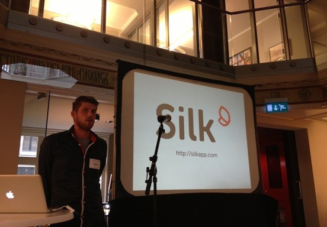

Slides of my talk at CFAMS
Last night I gave a talk at the Cross Functional Amsterdam user group. The audience was very enthusiastic and provided some thought provoking feedback. Thanks everyone for attending and thanks TTY for organizing!
As promised I’ve put the slides online. The slides were built with HTML/CSS and don’t render correctly in all browsers, so I put some effort into exporting them to PDF. Some of the margins in the PDF ended up a bit weird, but they’re quite readable after all.
Download the slides here (PDF)
If you want to learn more about Haskell, Learn You a Haskell for Great Good might be a good place to start.

(photo by Michel Rijnders)